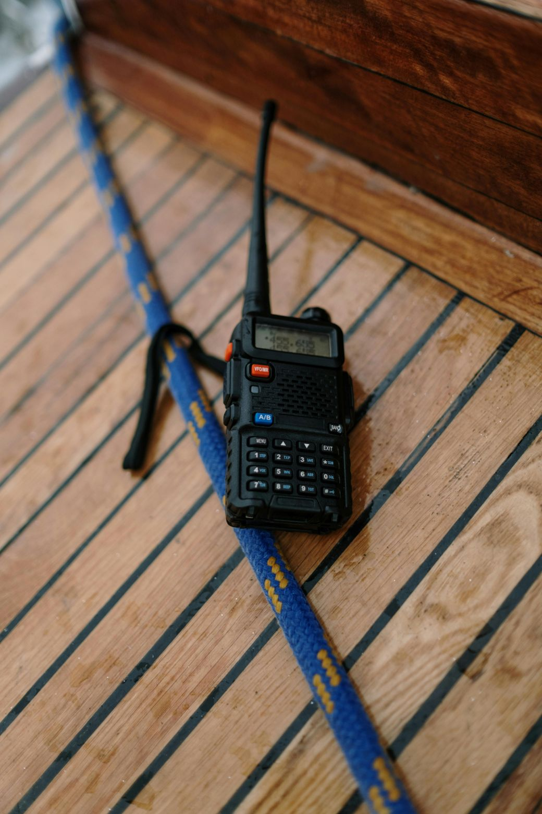
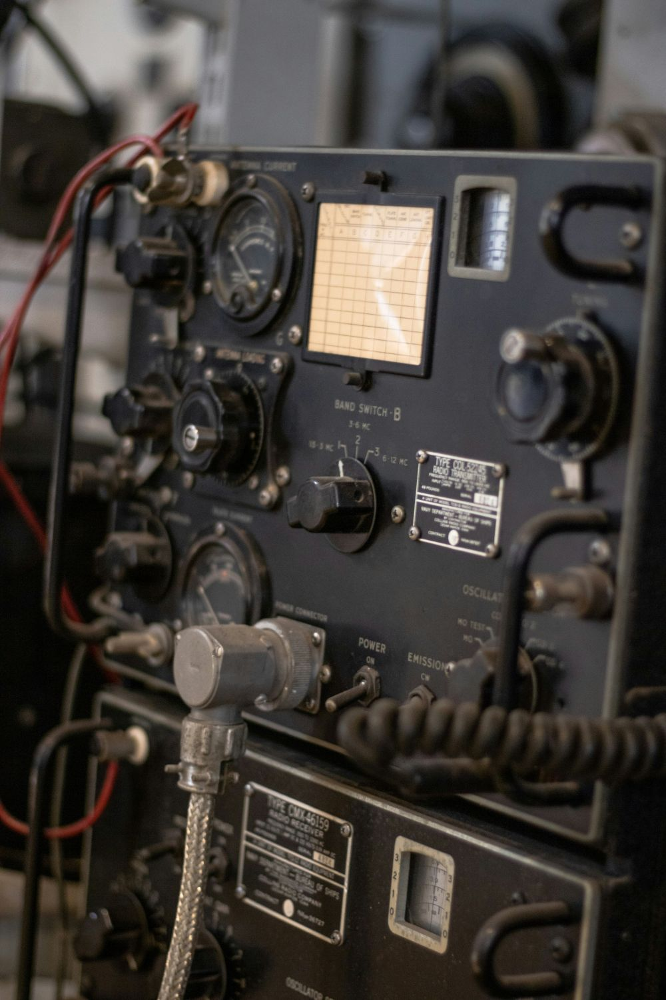

Radio Frequency Privileges

UHF Band
All levels of ham radio license have three different bands available in the UHF, or Ultra High Frequency range. These bands include the 23 cm, 33cm, and 70cm bands. These bands are used for a wide variety of experimentation and communication methods.
VHF Band
All levels of ham radio licenses also have full access to the three bands available in the VHF, or Very High Frequency range. These include the 1.25 meter, 2 meter, and 6 meter bands. These bands are all used for local communication, especially the 2 meter band, which is the most used band among ham radio operators. It is a popular choice especially for emergency communication. The 6 meter band is also of note as it starts to allow longer distance communication than is possible with higher frequency bands.
HF Band
The HF, or High Frequency range includes the remainder of the ham radio operating privileges. These permissions include frequency ranges in the 10, 12, 15, 17, 20, 30, 40, 80, 160, 630, and 2200 meter bands. Each band has its own differences and idiosyncrasies, but each is used for long-distance communication. Operating privileges on these bands are restricted to those with General and Amateur Extra licenses, with Amateur Extra license holders granted wider permissions than General license holders.
